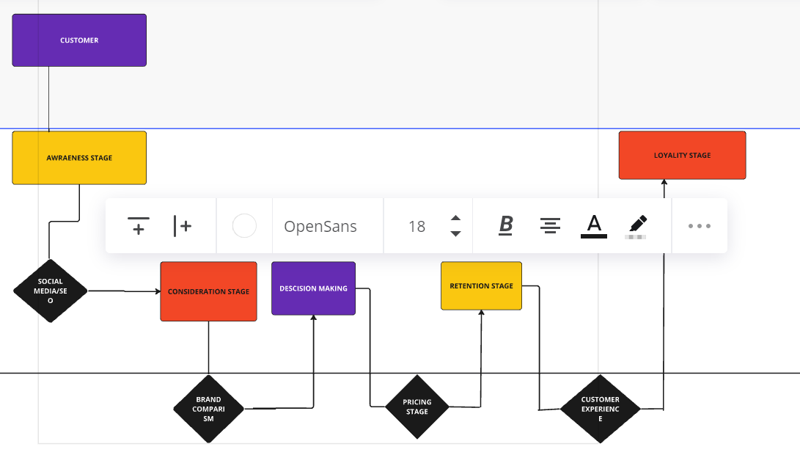
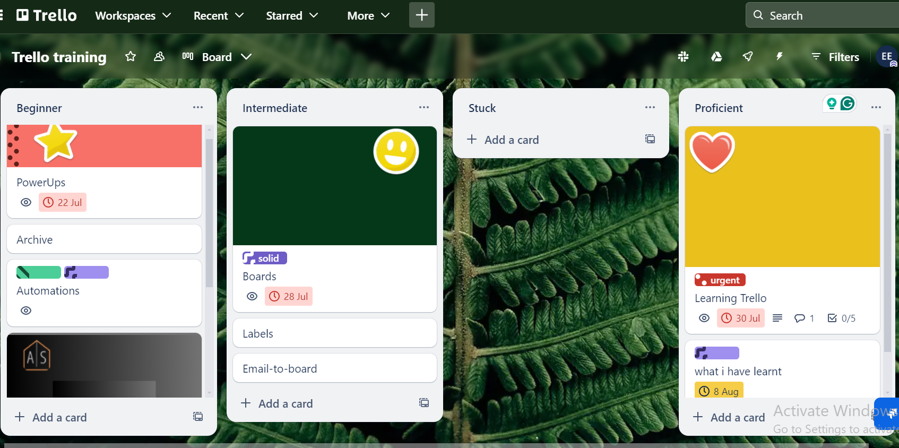
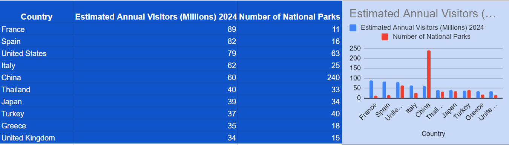

Customer journey using Miror

Trello

Research and data entry
Here I have written a detailed SOP outlining my workflow which applies to onbording, communication protocols, task management etc. Click here
Soft Skills
Technical Skills

As your virtual assistant, I will offer comprehensive support tailored to your specific needs to ensure your operations run smoothly and efficiently. I will manage your emails and calendar, schedule appointments, and handle travel arrangements, freeing you from administrative burdens. Additionally, perform data entry and analysis to maintain accurate records. By managing projects, tracking progress, and coordinating with team members, I will help keep your initiatives on track. I will also provide technical support, troubleshoot issues, and handle personal tasks, ensuring you can focus on your core activities while I take care of the rest.

I'll will be resposible for answering questions about your business's, product or services. Providing proactive customer outreach, collecting and analyzing customer feedback. Additionally, I will work closely with other teams to address any underlying issues and contribute to continuous improvement of customer service processes.

As a social media manager, I will craft and execute a strategic social media plan to enhance your brand's online presence. This involves creating and scheduling compelling content across various platforms, including posts, stories, and advertisements, tailored to resonate with your target audience. I will monitor and analyze social media metrics to gauge performance, adjust strategies for optimal results, and manage interactions with followers to foster a positive community. run targeted campaigns to boost brand awareness, and report on progress to keep you informed of growth and opportunities.


Working with Esther has been a game-changer for my business. Her virtual assisting skills are top-notch, and proactive approach has streamlined my workflow significantly. Highly recommend for anyone needing reliable and efficient support.
An article can be written of how amazing Esther is as a virtual assistant. Her attention to detail, organization, and dedication to work. Esther handles tasks efficiently and with a positive attitude. If you need someone reliable and skilled, Esther Wilfred is the one to call.
I highly recommend Esther for any employment role she chooses to take on. As a staff at Jollypapa, she possessed a unique blend of technical expertise and a fierce dedication to excellence. I have no doubt she'll make significant contribution to any organization she's a part of.

My journey as a customer support has been a part of my workflow which began fully in 2023, during a job I covered briefly. Hence It streamlined my career path, growth was majorly my pursuit and the need for boosting productivity and customer experience, which led me to advancing my skills in project management tools and CRM tools.
Currently, I'm working as a customer support, and undergoing a social media course, also working as a VA intern.Through my classes, job, internship, freelance work I'm constantly developing and fine-tuning the skills I need to become an expert in my field.
I'm always seeking to learn through mentoring or professtional opportunities. My career dream is to collaborate with support teams as passionate and curious as I am willling to impact businesses and CEO's productivity and people we believe in.